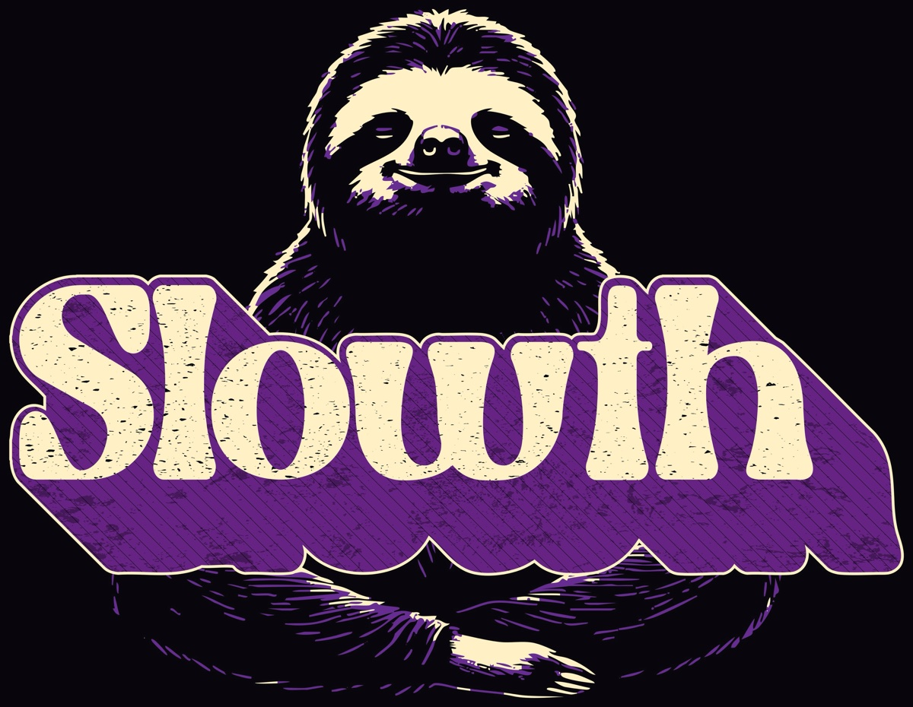

photo: viljami eronen

nordic fuzz from
turku, finland
members of coochilla, craneium,
i, captain and malamute
photo: viljami eronen

nordic fuzz from
turku, finland
members of coochilla, craneium,
i, captain and malamute
Slowth is a heavy rock band from Turku, Finland, built on fuzz, weight and atmosphere. Drawing inspiration from stoner rock and doom metal, the band blends crushing riffs, hypnotic grooves and expansive soundscapes into something both raw and immersive.
Featuring Jacke (Malamute) on vocals and guitar, Andreas (I, Captain) on guitar, Hector (Coochilla) on bass and Joel (Craneium) on drums, Slowth brings together four musicians with years of experience across records, clubs, festivals and tours. While a new band in its own right, Slowth is rooted in the European heavy underground, with established ties, firsthand knowledge of the scene and a network built through years of playing, touring and working alongside it.
Slowth has six songs recorded, currently being mixed and mastered by Robert Lamu of Swedish band Skraeckoedlan. The band will make its debut in 2027 with four singles, followed by a six-track album later that year. Four more songs are already taking shape.
With Martin Ahlö (Craneium) on booking duties, Slowth is setting its sights beyond Finland, ready to bring its sound to clubs, festivals and stages across Europe.
This is the beginning
| jacke | vocals & guitar (malamute) |
| andreas | guitar (i, captain) |
| hector | bass (coochilla) |
| joel | drums (craneium) |
| tour manager | martin ahlö (craneium) |
| mix & master | robert lamu (skraeckoedlan) |
| contact | hector bahamonde (slowth bassist) |
a single every two months, except summer. album at the end of the year. between releases, we’ll heavily promote every single with a social media campaign.
| february | single one |
| april | single two |
| september | single three |
| november | single four |
| december | album |
| labels | four singles and an album |
| promoters | club shows, support slots and festivals in europe |
| for fans of | skraeckoedlan, elder, mastodon, pallbearer |
slowthdoom.github.io
instagram: @slowthdoom